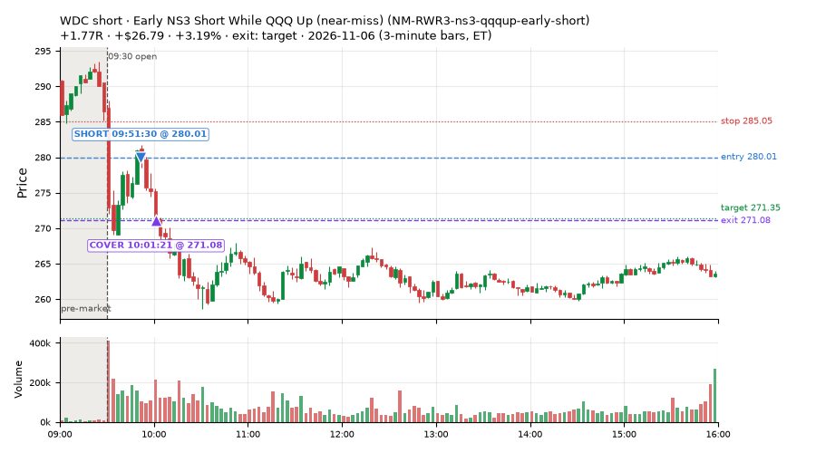
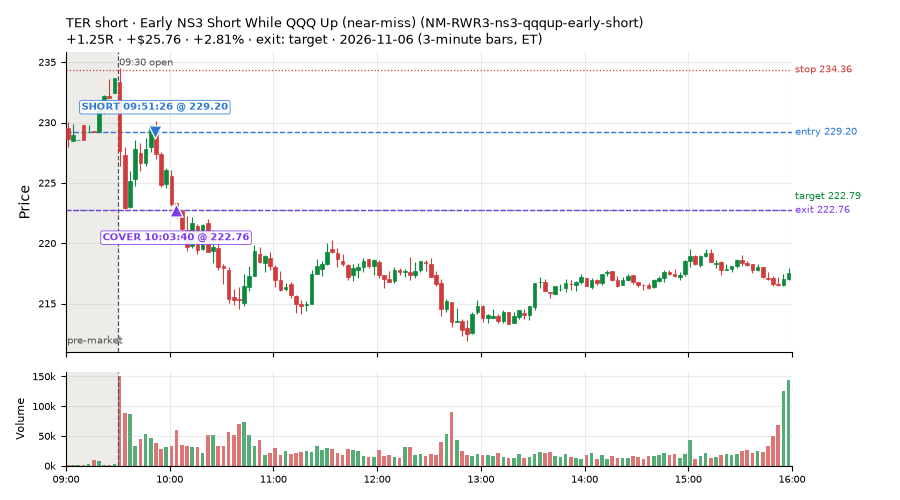
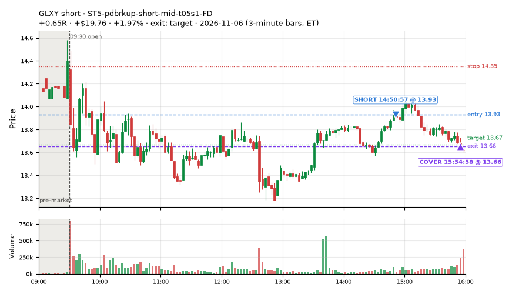
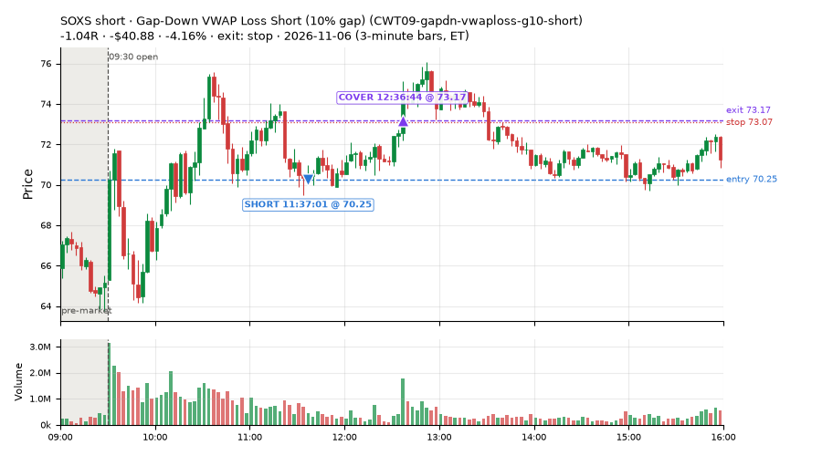
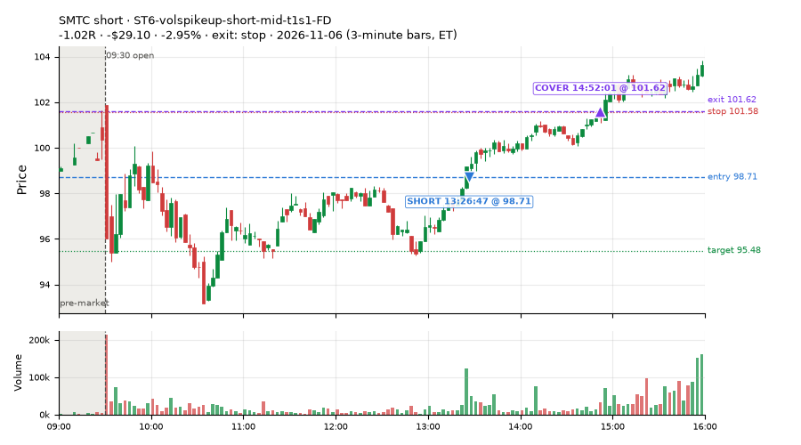
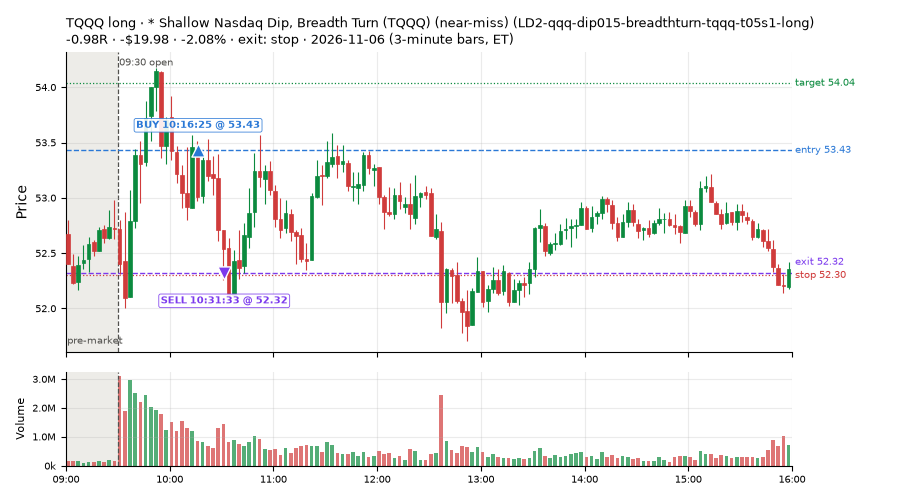
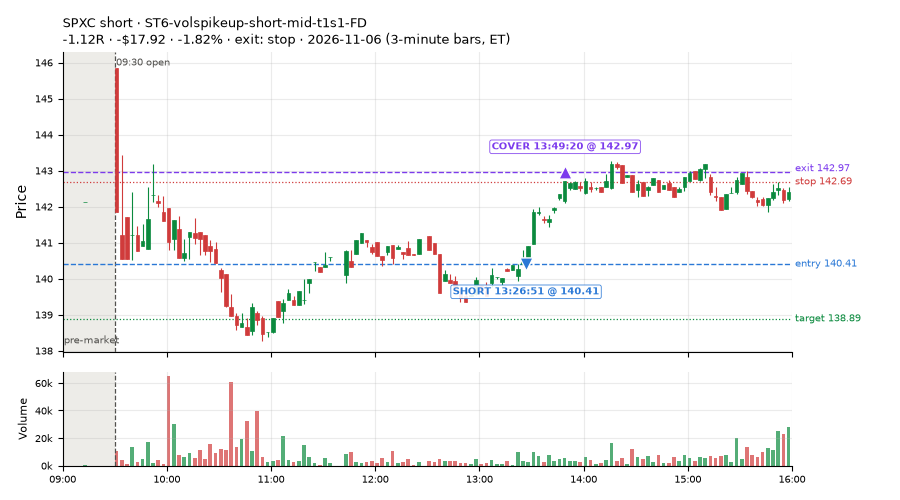
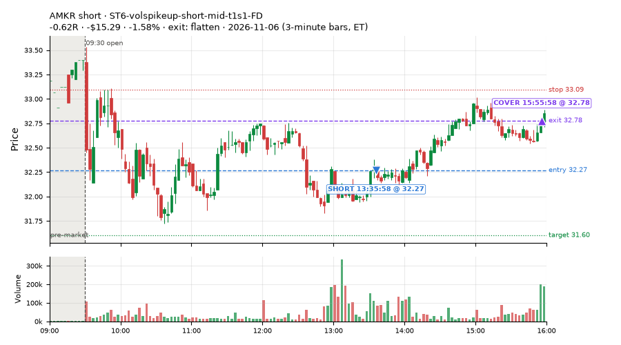

19 trades · win rate 42% · P/L $-59.54
PROBATION: no live setup has passed both locked test periods. 10 owner-directed setups added 2026-10-08 (MarcoFlow top 5 + 5 new), untested live. RW6G1 (RW6 + VWAP band guard) added 2026-10-09, probation.

| Symbol | Setup | Side | In | Out | Entry | Exit | Exit reason | % gained | P/L |
|---|---|---|---|---|---|---|---|---|---|
| WDC | Early NS3 Short While QQQ Up (near-miss) (NM-RWR3-ns3-qqqup-early-short) | short | 09:51 | 10:01 | 280.01 | 271.08 | target | +3.19% | $26.79 |
| TER | Early NS3 Short While QQQ Up (near-miss) (NM-RWR3-ns3-qqqup-early-short) | short | 09:51 | 10:03 | 229.20 | 222.76 | target | +2.81% | $25.76 |
| GLXY | ST5-pdbrkup-short-mid-t05s1-FD | short | 14:50 | 15:54 | 13.93 | 13.66 | target | +1.97% | $19.76 |
| Symbol | Setup | Side | In | Out | Entry | Exit | Exit reason | % lost | P/L |
|---|---|---|---|---|---|---|---|---|---|
| SOXS | CWT09-gapdn-vwaploss-g10-short | short | 11:37 | 12:36 | 70.25 | 73.17 | stop | -4.16% | $-40.88 |
| SMTC | ST6-volspikeup-short-mid-t1s1-FD | short | 13:26 | 14:52 | 98.71 | 101.62 | stop | -2.95% | $-29.10 |
| TQQQ | LD2-qqq-dip015-breadthturn-tqqq-t05s1-long | long | 10:16 | 10:31 | 53.43 | 52.32 | stop | -2.08% | $-19.98 |
| SPXC | ST6-volspikeup-short-mid-t1s1-FD | short | 13:26 | 13:49 | 140.41 | 142.97 | stop | -1.82% | $-17.92 |
| AMKR | ST6-volspikeup-short-mid-t1s1-FD | short | 13:35 | 15:55 | 32.27 | 32.78 | flatten | -1.58% | $-15.29 |








Signal to fill: median 2s, 90th percentile 5s (19 trades). Bars close each minute; the order follows the bar close.
Best excursion (MFE): median 0.17R; worst (MAE) median 0.53R. 63% of trades never got +0.25R in our favour; 0 reached +1R and still closed at or below 0.
| Symbol | Setup | Best R | Worst R | Closed R |
|---|---|---|---|---|
| SOXS | CWT09-gapdn-vwaploss-g10-short | +0.12 | -1.21 | -1.04 |
| SPXC | ST6-volspikeup-short-mid-t1s1-FD | -0.02 | -1.01 | -1.12 |
| SMTC | ST6-volspikeup-short-mid-t1s1-FD | +0.08 | -1.01 | -1.02 |
| TQQQ | LD2-qqq-dip015-breadthturn-tqqq-t05s1-long | +0.09 | -1.00 | -0.98 |
| AMKR | ST6-volspikeup-short-mid-t1s1-FD | +0.21 | -0.91 | -0.62 |
| Entry time | Trades | Win | Avg R | P/L |
|---|---|---|---|---|
| 09:50-10:30 | 5 | 80% | +0.53 | $44.54 |
| 11:30-13:00 | 1 | 0% | -1.04 | $-40.88 |
| 13:00-14:00 | 7 | 14% | -0.46 | $-74.72 |
| 14:00-16:00 | 6 | 50% | +0.08 | $11.52 |
| Setup | Trades | Win | Avg R | Adj R (net of SPY) | Avg R ex-market (all sessions) | P/L |
|---|---|---|---|---|---|---|
| Gap-Down VWAP Loss Short (10% gap) (CWT09-gapdn-vwaploss-g10-short) | 1.0 | 0% | -1.04 | -1.15 | – | $-40.88 |
| Spike-Pullback Flag Breakout (CWT12-flag-s1-long) | 2.0 | 50% | -0.02 | +0.10 | – | $-1.89 |
| * Shallow Nasdaq Dip, Breadth Turn (TQQQ) (near-miss) (LD2-qqq-dip015-breadthturn-tqqq-t05s1-long) | 1.0 | 0% | -0.98 | -0.82 | – | $-19.98 |
| Late-Day ETF Dip Buy (near-miss) (NM-ETF-late-dip-di-long) | 2.0 | 50% | +0.18 | +0.23 | +0.34 (beta +0.76, n 5) | $6.38 |
| Early NS3 Short While QQQ Up (near-miss) (NM-RWR3-ns3-qqqup-early-short) | 3.0 | 100% | +1.15 | +1.05 | – | $64.04 |
| ST3-rsi5up-short-pm-t1s1-FD | 1.0 | 0% | -0.42 | -0.56 | – | $-10.28 |
| ST5-pdbrkup-short-mid-t05s1-FD | 1.0 | 100% | +0.65 | +0.54 | – | $19.76 |
| ST6-volspikeup-short-mid-t1s1-FD | 8.0 | 25% | -0.39 | -0.49 | -0.81 (beta -1.76, n 9) | $-76.69 |
Market direction (SPY, beta 1) accounted for $23.69 of today's $-59.54; the rest ($-83.23) came from the setups themselves. Avg R net of SPY: -0.11 (incl. a hedge leg's cost; report only).
21 setups live today. Today: 51 signals, 19 taken, 0 lost because another setup held the symbol (0%). Since 2026-11-05 (2 sessions): 130 signals, 38 taken, 1 lost to other setups (1%). Peak open positions today 12 of 200 slots. Earnings blackout removed 1531 symbols before scanning.
Simulated playing time (not live): 91 what-if trades of signals not taken, avg -0.07R, 55% winners; of them 1 lost to another setup (avg +0.50R).
| Prio | Setup | Today sig / taken | Sessions | Signals / taken / trades | Taken/day | Expected/day | Lost to other setups | Lost to (setup n) | Top skip reasons | SIMULATED: not-taken n / avg R / win | Verdict |
|---|---|---|---|---|---|---|---|---|---|---|---|
| 1 | Index Dip Bounce 1 TQQQ IDX1-qqq100-0955-TQQQ-trail | 0 / 0 | 2 | 0 / 0 / 0 | 0.00 | – | 0 | – | – | 0 / – | quiet - wait no signals in 2 session(s); too early to tell |
| 2 | Index Dip Bounce 3 3x S&P IDX3-spy075-0955-3x-trail | 0 / 0 | 2 | 0 / 0 / 0 | 0.00 | – | 0 | – | – | 0 / – | quiet - wait no signals in 2 session(s); too early to tell |
| 3 | * Oversold Slope Turn with Breadth Turning Up (near-miss) LD5-st2-breadthup-t05s1-long | 0 / 0 | 2 | 0 / 0 / 0 | 0.00 | – | 0 | – | – | 0 / – | quiet - wait no signals in 2 session(s); too early to tell |
| 4 | * SPY Dip of 0.2 ATR, Breadth Turn (SPXL, trailing) (near-miss) LD6-spy-dip020atr-breadthturn-spxl-holdtr-long | 0 / 0 | 2 | 0 / 0 / 0 | 0.00 | – | 0 | – | – | 0 / – | quiet - wait no signals in 2 session(s); too early to tell |
| 5 | Backside Lower-High Short (big runner) CWT04-backside-lh-a25-short | 0 / 0 | 2 | 1 / 0 / 0 | 0.00 | – | 0 | – | not shortable / shorts off 1 | 1 / -1.10R / 0% | slow no entries yet |
| 6 | * Shallow Nasdaq Dip, Breadth Turn (TQQQ) (near-miss) LD2-qqq-dip015-breadthturn-tqqq-t05s1-long | 1 / 1 | 2 | 1 / 1 / 1 | 0.50 | – | 0 | – | – | 0 / – | slow 2.5 entries/week; ~24 weeks to 60 trades |
| 7 | Prior-Day Low Sweep Reversal to VWAP LIQ-pdl-sweep-open15-vwap-long | 0 / 0 | 2 | 2 / 2 / 2 | 1.00 | – | 0 | – | – | 0 / – | slow 5.0 entries/week; ~12 weeks to 60 trades |
| 8 | * Oversold Pop after an SPY Dip-Turn (trailing) (near-miss) LD7-ns1-idxturn-holdtr-long | 0 / 0 | 2 | 0 / 0 / 0 | 0.00 | – | 0 | – | – | 0 / – | quiet - wait no signals in 2 session(s); too early to tell |
| 9 | ST5-pdbrkup-short-mid-t05s1-FD ST5-pdbrkup-short-mid-t05s1-FD | 5 / 1 | 2 | 11 / 3 / 3 | 1.50 | 0.78 | 0 | – | not shortable / shorts off 8 | 8 / -0.39R / 50% | slow 7.5 entries/week; ~8 weeks to 60 trades |
| 10 | Early NS3 Short While QQQ Up (near-miss) NM-RWR3-ns3-qqqup-early-short | 10 / 3 | 2 | 10 / 3 / 3 | 1.50 | – | 0 | – | spread / quote / size 6, other 1 | 7 / +0.94R / 100% | slow 7.5 entries/week; ~8 weeks to 60 trades |
| 11 | Gap-Down Reclaim Fade, Afternoon (near-miss) NM-PM-gapdn-above-pdh-rvol-short | 1 / 0 | 2 | 1 / 0 / 0 | 0.00 | – | 0 | – | spread / quote / size 1 | 1 / +1.28R / 100% | slow no entries yet |
| 12 | Late-Day ETF Dip Buy (near-miss) NM-ETF-late-dip-di-long | 2 / 2 | 2 | 6 / 5 / 5 | 2.50 | – | 1 | CWT09-gapdn-vwaploss-g10-short 1 | symbol held by another setup 1 | 1 / +0.50R / 100% | slow 12.5 entries/week; ~5 weeks to 60 trades |
| 13 | ST6-volspikeup-short-mid-t1s1-FD ST6-volspikeup-short-mid-t1s1-FD | 11 / 8 | 2 | 13 / 9 / 9 | 4.50 | 1.24 | 0 | – | spread / quote / size 2, other 2 | 4 / -0.90R / 0% | ok 22.5 entries/week |
| 14 | Gap-Down VWAP Loss Short (10% gap) CWT09-gapdn-vwaploss-g10-short | 15 / 1 | 2 | 54 / 3 / 3 | 1.50 | – | 0 | – | not shortable / shorts off 49, spread / quote / size 2 | 51 / -0.07R / 55% | slow 7.5 entries/week; ~8 weeks to 60 trades |
| 15 | ST3-rsi5up-short-pm-t1s1-FD ST3-rsi5up-short-pm-t1s1-FD | 3 / 1 | 2 | 5 / 2 / 2 | 1.00 | 1.35 | 0 | – | not shortable / shorts off 1, spread / quote / size 1, other 1 | 3 / -0.91R / 0% | slow 5.0 entries/week; ~12 weeks to 60 trades |
| 16 | Afternoon Exhaustion Short, Gap-Down, SPY Up (near-miss) NM-RWR1-exh150-gapdn-spyup-pm-short | 0 / 0 | 2 | 0 / 0 / 0 | 0.00 | – | 0 | – | – | 0 / – | quiet - wait no signals in 2 session(s); too early to tell |
| 17 | Panic Flush Reversal (deep, 5x volume) CWT05-flush-m075-v5-long | 0 / 0 | 2 | 2 / 1 / 1 | 0.50 | – | 0 | – | spread / quote / size 1 | 1 / +0.92R / 100% | slow 2.5 entries/week; ~24 weeks to 60 trades |
| 18 | NS2 Short, SPY Up 0.5%, Not Friday (near-miss) NM-RWN4-ns2-spyup05-notfri-short | 0 / 0 | 2 | 0 / 0 / 0 | 0.00 | – | 0 | – | – | 0 / – | quiet - wait no signals in 2 session(s); too early to tell |
| 19 | Panic Flush Reversal (deep, 3x volume) CWT05-flush-m075-v3-long | 0 / 0 | 2 | 13 / 6 / 6 | 3.00 | – | 0 | – | other 6, spread / quote / size 1 | 6 / -0.09R / 67% | ok 15.0 entries/week |
| 20 | Spike-Pullback Flag Breakout CWT12-flag-s1-long | 3 / 2 | 2 | 7 / 3 / 3 | 1.50 | – | 0 | – | other 3, broker rejected 1 | 4 / +0.20R / 75% | slow 7.5 entries/week; ~8 weeks to 60 trades |
| 21 | Backside VWAP-Test Short CWT04-backside-vwaptest-a15-short | 0 / 0 | 2 | 4 / 0 / 0 | 0.00 | – | 0 | – | not shortable / shorts off 4 | 4 / -0.30R / 25% | slow no entries yet |
Every trade is attached as a CSV you can open and edit in Excel or Google Sheets. Live page: https://misiti15.github.io/MCF/live/